Linux的基本指令
一、进阶指令（重点）
1、df指令
作用：查看磁盘的空间（disk free）
语法：#df -h -h表示以可读性较高的形式展示大小

这几列依次是：磁盘名称、总大小、被使用的大小、剩余大小、使用百分比、挂载路径
2、free指令
作用：查看内存使用情况
语法：#free -m -m表示以mb为单位查看
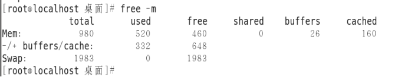
看剩余空间看free那一列。
Mem第一行是内存的真实的使用情况，包含了已经被分配的共享内存、输出缓冲区、缓存内存等。
-/+第二行最后一个数字就是实际的内存剩余情况（包含了未使用的共享内存、缓冲区、缓存）
第三行Swp交换空间内存。可以在内存不够使用的情况下当临时内存来使用，交换分区并不是越大越好，一般话它就等同于实际内存的大小。
Total 总大小
used使用过的大小
Free 空闲的空间
Shared 共享内存
Buffers 输出缓冲区
Cached 缓存内存
看实际剩余内存只需要看648那个数字的位置即可，648≈460+25+160
3、head指令
作用：查看一个文件的前n行，如果不指定n，则默认显示前10行。
语法：#head -n 文件路径 【n表示数字】
案例：使用/root/install.log尝试演练head指令，显示前3行
#head -3 /root/install.log
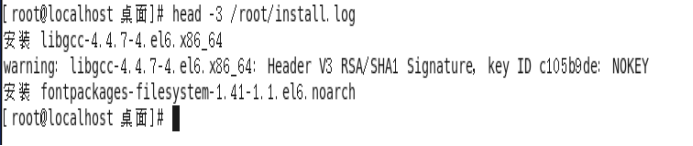
案例：使用head不添加指定的行数
#head /root/install.log
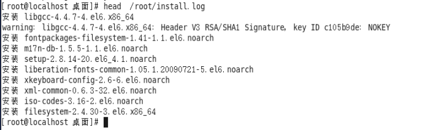
4、tail指令
作用1：查看一个文件的末n行，如果n不指定默认显示后10行
语法：#tail -n 文件的路径 n同样表示数字
案例：显示install.log文件的最后5行和最后默认的十行
#tail -5 /root/install.log #tail /root/install.log
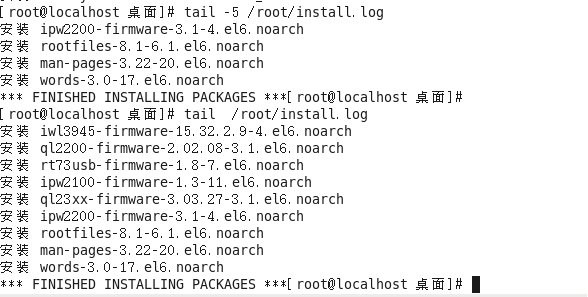
作用2：可以通过tail指令来查看一个文件的动态变化内容【变化的内容不能是用户手动增加的】
语法：#tail -f 文件路径
该命令一般用于查看系统的日志比较多。
案例：使用tail -f的语法查看/test.txt文件的动态变化情况（test.txt文件不存在）
#touch /test.txt
#tail -f /test.txt
#free -m > /test.txt
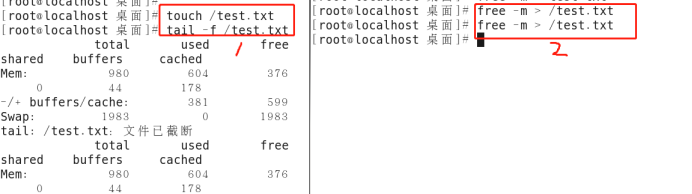
注意：要想观察到变化的效果，需要同时开启两个终端中去实践，一个终端执行tail -f，另外一个终端去执行能够让文件内容产生变化的指令。
退出tail -f卡屏状态可以按下ctrl+c键，在命令行中c不再表示copy，而表示cancel（终止）。
5、less指令（了解）
作用：查看文件，以较少的内容进行输出，按下辅助功能键（数字+回车、空格键+上下方向键）查看更多
空格是一页一页翻
上下键是一行一行翻
1是往下1行；10是往下10行
语法：#less 需要查看的文件路径
案例：使用less指令查看/root/install.log
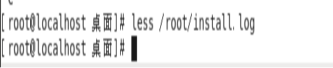
在退出的只需要按下q键（quit）即可（此时ctrl+c不好使）。
6、wc指令（重点）
作用：统计文件内容信息（包含行数、单词数、字节数），wc = word count
语法：#wc -lwc 需要统计的文件路径
-l：表示lines，行数（以回车/换行符为标准）
-w：表示words，单词数 依照空格来判断单词数量
-c：表示char，字节数（空格，回车，换行）
案例：使用wc指令测试install.log
①测试文件有多少行
#wc -l /root/install.log
②测试文件有多少个单词
#wc -w /root/install.log
③测试文件有多少个字节
#wc -c /root/install.log
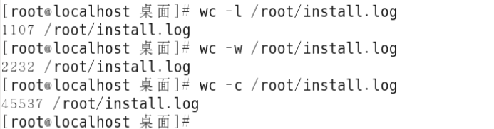
选项的顺序不影响输出结果。
7、date指令（重点）
作用：表示操作时间日期（读取、设置）
语法1：#date 输出的形式：2018年 3月 24日 星期六 15:54:28 CST
语法2：#date “+%F” （等价于#date “+%Y-%m-%d” ） 输出形式：2018-03-24
语法3：#date “+%F %T” 引号表示让“年月日与时分秒”成为一个不可分割的整体
等价操作#date “+%Y-%m-%d %H:%M:%S”
输出的形式：2018-03-24 16:01:00
语法4：获取之前或者之后的某个时间（备份）数据库一般是1天备份一次
#date -d “-1 day” “+%Y-%m-%d %H:%M:%S”
符号的可选值：+（之后） 或者 - （之前）
单位的可选值：day（天）、month（月份）、year（年）
%F：表示完整的年月日，形如2018-12-31
%T：表示完整的时分秒，形如08:00:00
%Y：（year）表示四位年份
%m：（month）表示两位月份（带前导0）
%d：（day）表示日期（带前导0）
%H：（hour）表示小时（带前导0）
%M：(minute)表示分钟（带前导0）
%S：（second）表示秒数（带前导0）
案例：现在要求输出以下格式的时间“日/月/年 时:分:秒”
#date “+%d/%m/%Y %T”
案例：获取7天之前的时间，格式为年-月-日 时:分:秒
#date -d “-7 day” “+%F %T”
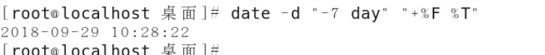
8、cal指令（了解）
作用：用来操作日历的（只有1和3）
语法1：#cal 等价于 #cal -1 直接输出当前月份的日历
语法2：#cal -3 表示输出上一个月+本月+下个月的日历
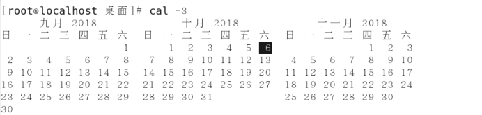
语法3：#cal -y 年份数字 表示输出某一个年份的日历
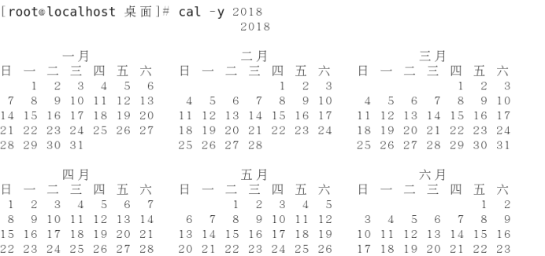
9、clear/ctrl + L指令（实用）
作用：清除终端中已经存在的命令和结果（信息）。
语法：#clear 或者快捷键：ctrl + L
需要注意的是，该命令并不是真的清除了之前的信息，而是把之前的信息的隐藏到了最上面，通过滚动条继续查看以前的信息。
10、管道（重点、难点）
管道符：|
作用：管道一般可以用于“过滤”，“特殊”，“扩展处理”。
语法：管道不能单独使用，必须需要配合前面所讲的一些指令来一起使用，其作用主要是辅助作用。
①过滤案例（100%使用）：需要通过管道查询出根目录下包含“y”字母的文档名称。
#ls / | grep “y”
grep指令用于“过滤”
针对上面这个命令说明：
①以管道作为分界线，前面的命令有个输出，后面需要先输入（缺少查找范围），然后再过滤，最后再输出，通俗的讲就是管道前面的输出就是后面指令的输入（前面的输出就是后面指令的操作对象）；
（便于理解）上述的指令变相实现可以如下：
#ls / > xxx.txt 将ls / 的结果保存到xxx.txt中
#grep “y” xxx.txt 使用grep指令搜索xxx.txt中的包含y的行
②grep指令：主要用于过滤
语法：#grep [选项] “搜索关键词” 搜索范围
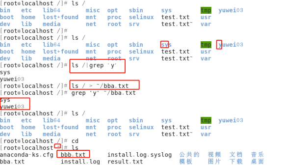
②特殊用法案例：通过管道的操作方法来实现less的等价效果（了解）
例如：源指令是“less xxx.txt”使用管道的话则可以写成： cat xxx.txt | less
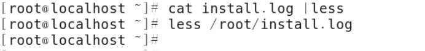
之前通过less查看一个文件，可以#less 路径
现在通过管道还可以这么：#cat 路径|less
③扩展处理：请使用学过的命令，来统计某个目录下的文档的总个数？
例如：需要统计“/”下的文档的个数
#ls / | wc -l
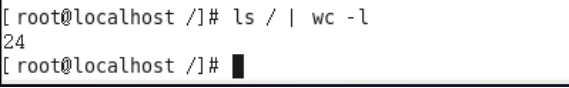
练习题：用户在计算机中有一个配置文件（/etc/passwd），一般情况下，一个用户会占用一行配置，请你使用现学的指令统计当前计算机中一共有多少个用户信息。
#cat /etc/passwd | wc -l
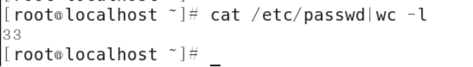
二、高级指令
1、hostname指令
作用：操作服务器的主机名（读取、设置）
语法1：#hostname 主机名.完整域名
语法2：#hostname -f 全限定域名（FQDN），
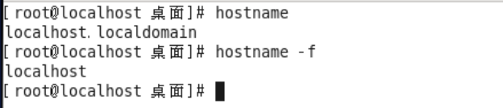
2、id指令
作用：查看一个用户的一些基本信息（包含用户id，用户组id，附加组id…），该指令如果不指定用户则默认当前用户。
语法1：#id 默认显示当前执行该命令的用户的基本信息
语法2：#id 用户名 显示指定用户的基本信息
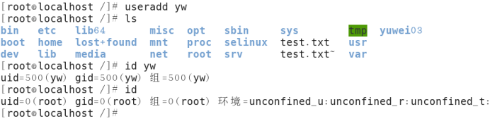
验证上述信息是否正确？
验证用户信息：通过文件/etc/passwd
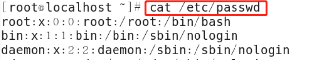
验证用户组信息：通过文件/etc/group
3、whoami指令
作用：“我是谁？”显示当前登录的用户名，一般用于shell脚本，用于获取当前操作的用户名方便记录日志。
语法：#whoami
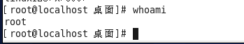
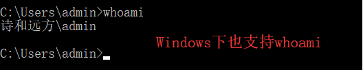
4、ps -ef指令（重点）
Windows7打开服务管理器；C:\Windows\system32\taskmgr.exe
指令：ps 【process show】
作用：主要是查看服务器的进程信息
选项含义：
-e：等价于“-A”，表示列出全部的进程
-f：表示full，显示全部的列（显示全字段）
执行结果：
#ps -ef
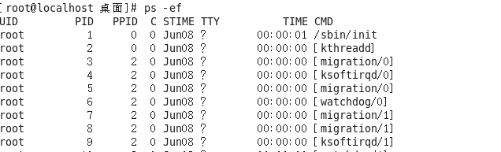
列的含义：
UID：该进程执行的用户id；
PID：进程id；
PPID：该进程的父级进程id，如果一个程序的父级进程找不到，该程序的进程称之为僵尸进程（parent process ID）；
C：Cpu的占用率，其形式是百分数；
STIME：进行的启动时间；
TTY：终端设备，发起该进程的设备识别符号，如果显示“?”则表示该进程并不是由终端设备发起；
TIME：进程的执行时间；
CMD：该进程的名称或者对应的路径；
案例：（100%使用的命令）在ps的结果中过滤出想要查看的进程状态“crond”进程
#ps -ef|grep “进程名称”
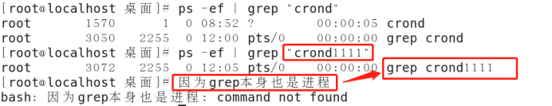
注意查询结果：其中如果只有一条则表示没查到对应的进程（这1条表示刚才ps指令的自身）。只有查到的结果多余1条，才表示有对应的进程。
补充：针对上述情况的优化：如果没有对应的进程，则什么都不显示。
思路：在现有的基础之上再次使用管道去处理下（-v选项表示“排除”）。
# ps -ef | grep “crond” | grep -v “grep”
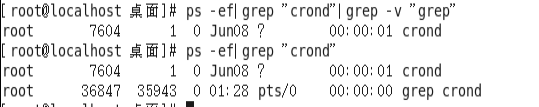
再例如查看火狐浏览器的进程：
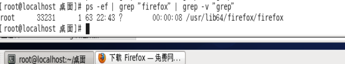
5、top指令（重点）
作用：查看服务器的进程占的资源（100%使用）
语法：
进入命令：#top （动态显示）
退出命令：按下q键
输出的结果：
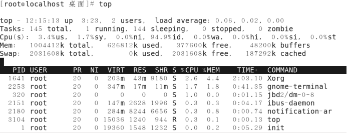
表头含义：
PID：进程id；
USER：该进程对应的用户；
PR：优先级；最高的RT
VIRT：虚拟内存；
RES：常驻内存；
SHR：共享内存；
计算一个进程实际使用的内存 = 常驻内存（RES）- 共享内存（SHR）
S：表示进程的状态status（sleeping，其中S表示睡眠，R表示运行）；
%CPU：表示CPU的占用百分比；
%MEM：表示内存的占用百分比；
TIME+：执行的时间；
COMMAND：进程的名称或者路径；
在运行top的时候，可以按下方便的快捷键：
M：表示将结果按照内存（MEM）从高到低进行降序排列；
P：表示将结果按照CPU使用率从高到低进行降序排列；
1：当服务器拥有多个cpu的时候可以使用“1”快捷键来切换是否展示显示各个cpu的详细信息；
Top 表示当前指令 时间 up 当前计算机运行时间 活跃用户 负载情况 压力情况
Tasks表示任务数 runnering运行 sleeping休眠 stopped停止 zombie僵尸进程（未响应）
6、du -sh指令
作用：查看目录的真实大小
语法：#du -sh 目录路径
选项含义：
-s：summaries，只显示汇总的大小
-h：表示以高可读性的形式进行显示
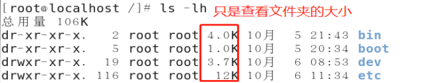
案例：统计“/root”目录的实际大小 #du -sh /root
案例：统计“/etc”目录实际大小 #du -sh /etc
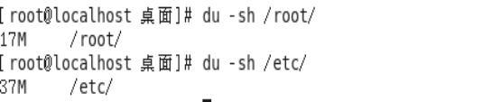
7、find指令（重点）
作用：用于查找文档（其参数有55个之多）
语法：#find 路径范围 选项1 选项1的值 [选项2 选项2的值…]
选项：
-name：按照文档名称进行搜索（支持模糊搜索）
-type：按照文档的类型进行搜索
文档类型：“-”表示文件（在使用find的时候需要用f来替换），“d”表示文件夹
案例：使用find来搜索httpd.conf
#find / -name httpd.conf
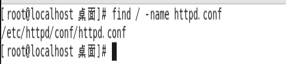
案例：搜索/etc目录下所有的conf后缀文件
#find /etc -type f -name *.conf 【通配符，表示任意的符号】
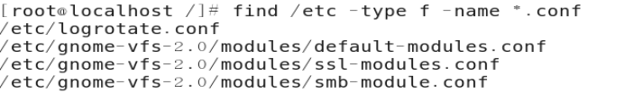
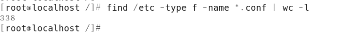
案例：使用find来搜索/etc/sane.d/目录下所有的文件
#find /etc/sane.d/ -type f
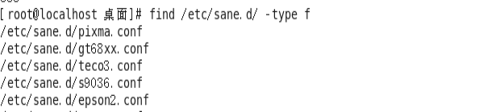
案例：使用find来搜索/etc/目录下所有的文件夹
#find /etc -type d
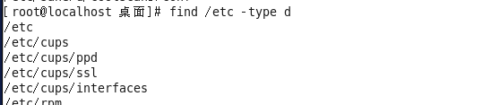
8、service指令（重点）
作用：用于控制一些软件的服务启动/停止/重启
语法：#service 服务名 start/stop/restart
服务和进程：
服务≠进程
进程是指运行的程序（状态不一定是正在运行：run/sleep/stop/zombie）
服务是进程的一个“外壳”
例如：需要启动本机安装的Apache（网站服务器软件），其服务名httpd
#service httpd start
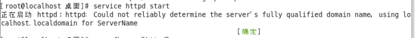
通过ps命令来检查httpd服务是否启动：
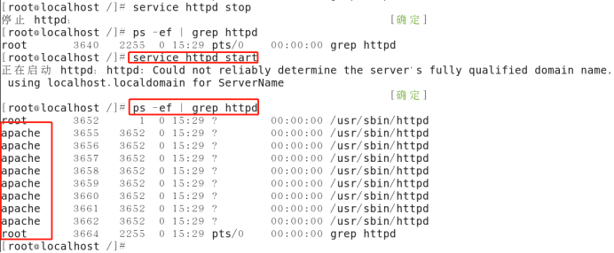
了解：在centos7中，service指令将会被systemctl所替代（#systemctl start/restart/stop 服务名）。
9、kill指令（重点）
作用：表示杀死进程 （当遇到僵尸进程或者出于某些原因需要关闭进程的时候）
语法：#kill 进程ID （语法需要配合ps一起使用）如果需要杀死子进程，则可以直接杀父进程
案例：需要kill掉Apache的进程
#ps -ef |grep “httpd” 查询apache的进程id【如果进行有多个，并且是父子关系，在选进程id的时候选父级id】
#kill PID
注意：杀子进程的时候需要杀死父进程。
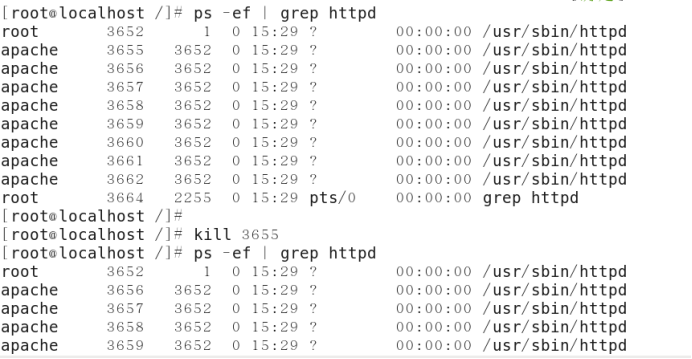
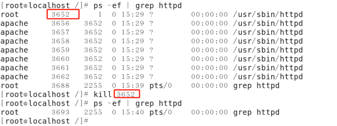
与kill命令作用相似但是比kill更加好用的杀死进程的命令：killall
语法：#killall 进程名称
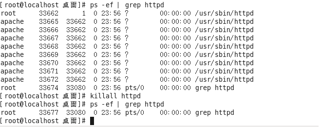
建议：尽量还是建议使用kill PID的形式进行对进程的杀死。
补充：
1）kill
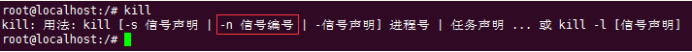
kill -9 pid
kill -9 pid等于kill -s 9 pid，表示强制，尽快终止一个进程。多半admin会用这个命令。
2）kill -l（查看Linux/Unix的信号变量）

10、ifconfig指令（重点）
作用：用于操作网卡相关的指令。
简单语法：#ifconfig （获取网卡信息）
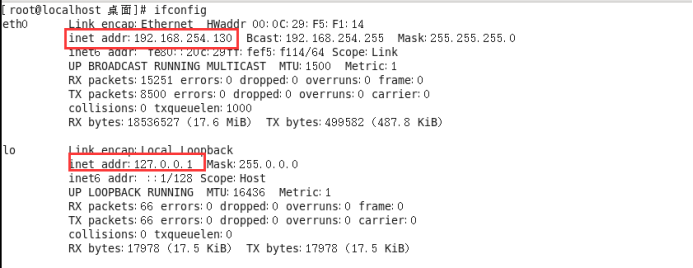
在上述的信息中，可以得知以下：
a. 这里有2个网卡；
b. 其ip地址是inet addr（圈红的地方）
c. eth0是默认的第一块网卡，lo（loop）表示回环网卡
11、reboot指令
作用：重新启动计算机
语法1：#reboot 重启
语法2：#reboot -w 模拟重启，但是不重启（只写关机与开机的日志信息）
12、shutdown指令
作用：关机 （慎用）
语法1：#shutdown -h now “关机提示” 或者 #shutdown -h 15:25 “关机提示”
#shutdown -h +分钟数 “关机提示”
案例：设置Linux系统关机时间在12:00
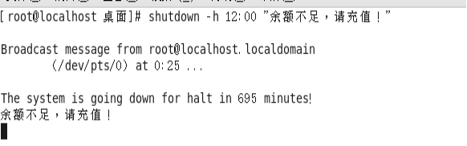
如果想要取消关机计划的话，则可以按照以下方式去尝试：
①针对于centos7.x之前的版本：ctrl+c
②针对于centos7.x（包含）之后的版本：#shutdown -c
除了shutdown关机以外，还有以下几个关机命令：
#init 0
#halt
#poweroff
在Windows下关机指令，shutdown -s -t 3600
13、uptime指令
作用：输出计算机的持续在线时间（计算机从开机到现在运行的时间）
语法：#uptime
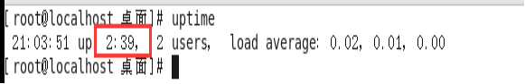
扩展：Windows下怎么看开机到现在的持续时间？
#systeminfo
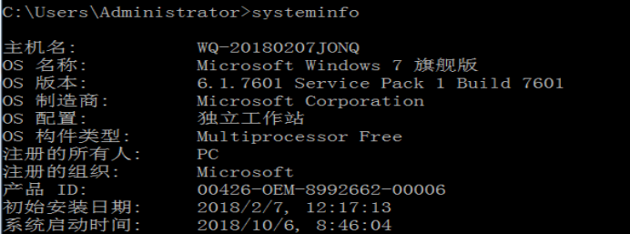
14、uname指令
作用：获取计算机操作系统相关信息
语法1：#uname 获取操作系统的类型
语法2：#uname -a all，表示获取全部的系统信息（类型、全部主机名、内核版本、发布时间、开源计划）
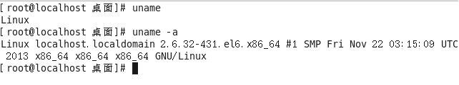
15、netstat -tnlp指令
作用：查看网络连接状态
语法：#netstat -tnlp
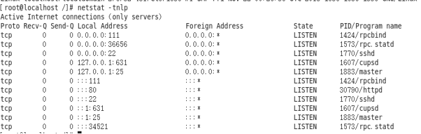
Protocol：协议（tcp、upd、http、https、icmp、ssh…）
Receive：接收
Send：发送
选项说明：
-t：表示只列出tcp协议的连接；
-n：表示将地址从字母组合转化成ip地址，将协议转化成端口号来显示；
-l：表示过滤出“state（状态）”列中其值为LISTEN（监听）的连接；
-p：表示显示发起连接的进程pid和进程名称；
16、man指令
作用：manual，手册（包含了Linux中全部命令手册，英文）
语法：#man 命令 （退出按下q键）
案例：通过man命令查询cp指令的用法
#man cp
三、练习题
1、如何通过命令行重启linux操作系统？
2、如何在命令行中快速删除光标前/后的内容？ 前：ctrl + u 后：ctrl + k
3、如何删除/tmp下所有A开头的文件？
4、系统重要文件需要备份，如何把/etc/passwd备份到/tmp目录下？
5、如何查看系统最后创建的3个用户？
6、什么命令可以统计当前系统中一共有多少账户？
7、如何创建/tmp/test.conf文件？
8、如何通过vim编辑打开/tmp/test.conf?
9、如何查看/etc/passwd的头3行和尾3行？
10、如何一次性创建目录/text/1/2/3/4？
11、如何最快的返回到当前账户的家目录？
12、如何查看/etc所占的磁盘空间？
13、尝试启动Apache的服务，并且检查是否启动成功。
14、使用已学命令杀死Apache的进程。
答案：
1、init6或 #reboot
2、前：ctrl + u 后：ctrl + k
3、rm -f /tmp/A*
4、cp /etc/passwd /tmp
5、tail -3 /etc/paswwd
6、wc -l /etc/passwd
7、touch /tmp/test.conf
8、vim /tmp/test.conf
9、head -3 /etc/passwd
10、tail -3 /etc/passwd
11、cd
12、Du -sh /etc
13、Service httpd start
Ps -ef | grep httpd | grep -v grep
Ps -A | grep httpd
Ps -e | grep httpd
14、killall httpd